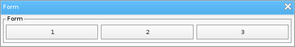

Löve Frames - The Form Object
Return to Index
Information
The form object can be used to group objects into a simple layout.
Example Use
local frame = loveframes.Create("frame")
frame:SetName("Form")
frame:SetSize(500, 80)
frame:CenterWithinArea(unpack(demo.centerarea))
local form = loveframes.Create("form", frame)
form:SetPos(5, 25)
form:SetSize(490, 65)
form:SetLayoutType("horizontal")
for i=1, 3 do
local button = loveframes.Create("button")
button:SetText(i)
button:SetWidth((490/3) - 7)
form:AddItem(button)
end

Event Callbacks
The form object has not unique event callbacks.
Methods
AddItem - Adds an item to the object
- Note: This method is called internally by the object. Most developers should never need to call this method directly.
- Note: Acceptable layout types are vertical or horizontal
- Returns 1 value: layout_type [string]
- Returns 1 value: top_margin [string]
- Returns 1 value: name [string]
object:AddItem(item[object])RemoveItem - Removes an item from the object
object:RemoveItem(item[number or object])LayoutObjects - Recalculates the layout of the object's children
- Note: This method is called internally by the object. Most developers should never need to call this method directly.
object:LayoutObjects()SetLayoutType - Sets the object's layout type
- Note: Acceptable layout types are vertical or horizontal
object:SetLayoutType(layout_type[string])GetLayoutType - Gets the object's layout type
- Returns 1 value: layout_type [string]
local layout_type = object:GetLayoutType()SetTopMargin - Sets the margin between the top of the object and its children
object:SetTopMargin(top_margin[number])GetTopMargin - Gets the margin between the top of the object and its children
- Returns 1 value: top_margin [string]
local top_margin = object:GetTopMargin()SetName - Sets the object's name
object:SetName(name[string])GetName - Gets the object's name
- Returns 1 value: name [string]
local name = object:GetName()